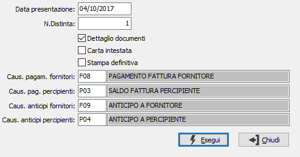

Stampa distinte di pagamento
Il programma effettua la stampa delle distinte di pagamento elaborate.

DATA DI PRESENTAZIONE: è la data in cui viene presentata in banca la distinta pagamenti; in fase di stampa definitiva questa data viene memorizzata sul pagamento stampato. Con questa data vengono generati i movimenti contabili di pagamento. Viene proposta la data di sistema, modificabile.
NUMERO DISTINTA: è il numero progressivo della distinta di pagamento. Viene proposto il numero dell’ultima distinta, modificabile.
DETTAGLIO DOCUMENTI: check box per definire se, nel caso di pagamenti raggruppati per lo stesso fornitore, debba essere stampato il riferimento a tutti i documenti o meno. Valori ammessi: vuoto = stampa solo il primo documento; spunta = stampa tutti i riferimenti
CARTA INTESTATA: check box per definire il tipo di carta utilizzato. Valori ammessi: vuoto = viene utilizzata la normale carta bianca e quindi viene stampata anche la ragione sociale dell'utente; spunta = viene utilizzata la carta intestata del cliente e non viene stampata la ragione sociale dell'utente.
STAMPA DEFINITIVA: check box per definire la modalità di stampa. Valori ammessi: vuoto = Stampa di prova; spunta = Stampa definitiva.
CAUSALE PAGAMENTO FORNITORI: indicare la causale contabile con cui verrà generato il movimento contabile di addebito della banca e accredito del fornitore. Se presente in Tabella Codici fissi, viene proposta automaticamente ed è modificabile. Nel caso in cui l’utente utilizzi più banche per i pagamenti, oppure utilizzi causali diverse per ritiro effetti e bonifici, la causale deve essere inserita dall’utente stesso. Sul campo è attiva la ricerca su finestra video F9.
CAUSALE PAGAMENTO PERCIPIENTI: indicare la causale contabile con cui verrà generato il movimento contabile di addebito della banca, del conto Erario e dei conti Inps e Inail e accredito del percipiente. Se presente in Tabella Codici fissi, viene proposta automaticamente ed è modificabile. Nel caso in cui l’utente utilizzi più banche per i pagamenti, oppure utilizzi causali diverse per ritiro effetti e bonifici, la causale deve essere inserita dall’utente stesso. Sul campo è attiva la ricerca su finestra video F9.
CAUSALE ANTICIPI FORNITORI: indicare la causale contabile con cui verrà generato il movimento contabile per eventuali accrediti registrati in fase di elaborazione e manutenzione distinta relativa a disposizioni di pagamento. Se presente in Tabella Codici fissi, viene proposta automaticamente ed è modificabile. Sul campo è attiva la ricerca su finestra video F9.
CAUSALE ANTICIPI PERCIPIENTI: indicare la causale contabile con cui verrà generato il movimento contabile per eventuali accrediti registrati in fase di elaborazione e manutenzione distinta relativa a disposizioni di pagamento. Se presente in Tabella Codici fissi, viene proposta automaticamente ed è modificabile. Sul campo è attiva la ricerca su finestra video F9.